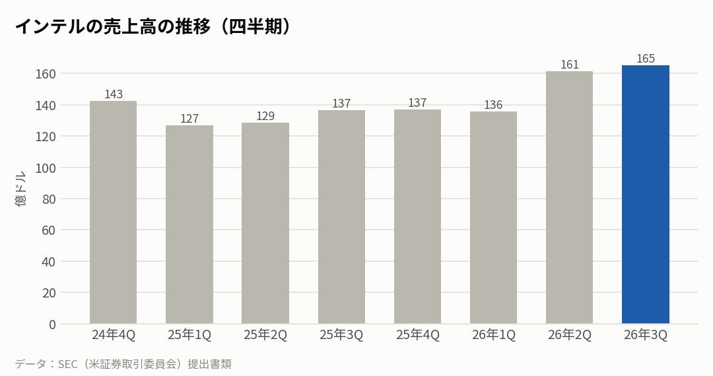
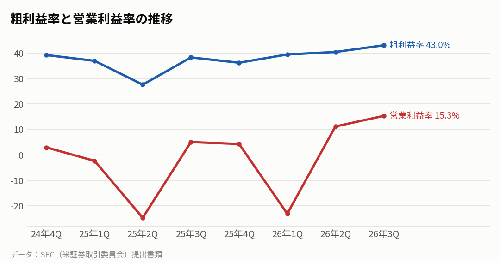
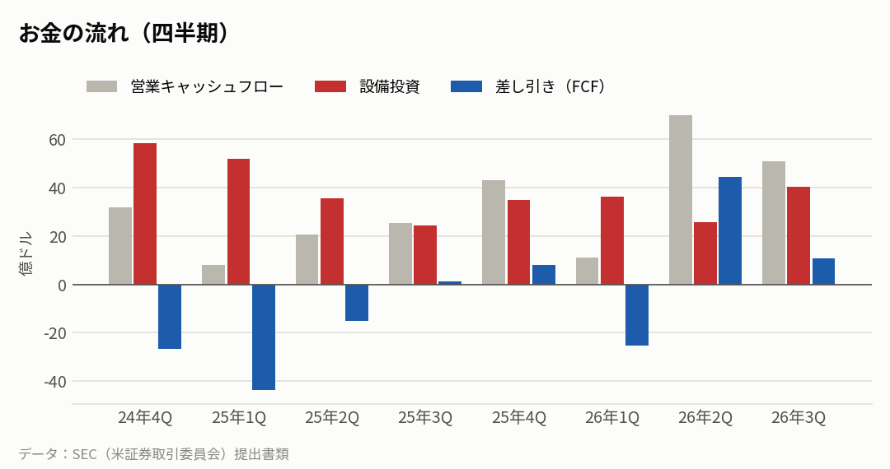
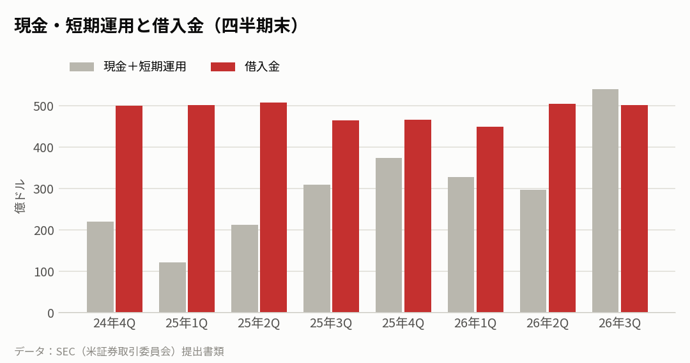
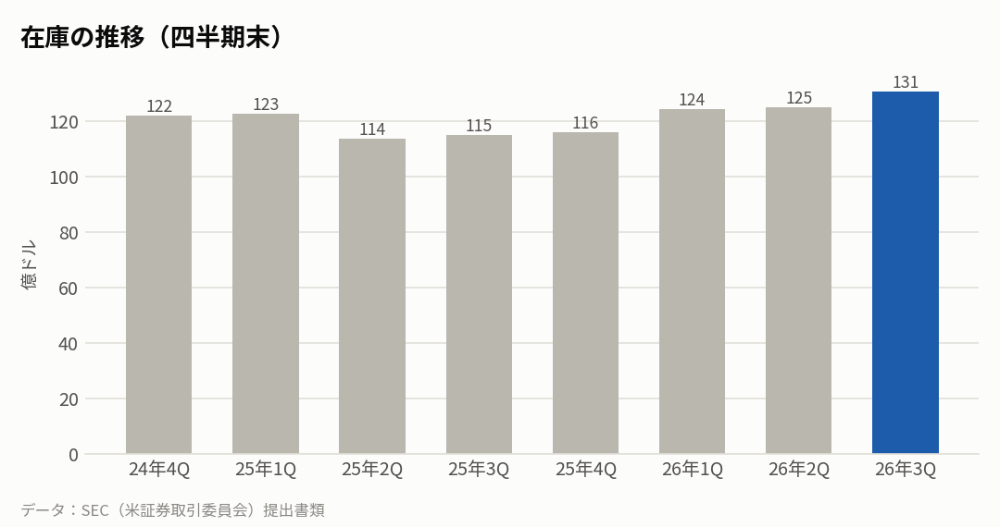

INTC｜2026年7〜9月期の決算｜決算発表 2026年10月29日
インテルの決算：データセンターは急伸、次の四半期は減収の見通し
7〜9月期の売上高は前年同期比21%増の165億ドル。データセンター・AI 部門が78%伸びて全体を押し上げた。一方、10〜12月期は売上高150億〜160億ドルと減収の見通しを示し、粗利益率も下がる見込みだ。
主な数字（2026年7〜9月期）
| 今回 | 前年同期 | 前年比 | |
|---|---|---|---|
| 売上高 | 165億ドル | 137億ドル | +20.9% |
| 粗利益率 | 43.0% | 38.2% | |
| 営業利益率 | 15.3% | 5.0% | |
| 純利益 | 33億ドル | 41億ドル | |
| 1株利益（希薄化後） | 0.60ドル | 0.90ドル |
部門ごとの売上
| 部門 | 売上 | 前年比 |
|---|---|---|
| データセンター・AI | 73億ドル | +78.0% |
| パソコン向け（クライアント・フィジカルAI） | 81億ドル | -5.0% |
| ファウンドリ（受託生産。大半は社内向け） | 67億ドル | +58.0% |
| その他（Mobileyeなど） | 7億ドル | -30.0% |

会社の見通し（次の四半期）
| 売上高 | 150億〜160億ドル（今回 165億ドル） |
|---|---|
| 粗利益率（会計基準） | 37.1%（今回 43.0%） |
| 1株利益（調整後） | 0.25ドル（今回 0.52ドル） |
- 見通しの売上高は、今回の165億ドルを下回る。粗利益率（会計基準）も43.0%から37.1%に下がる見込みだ。
- 一部の報道は、パソコン市場の低迷とイスラエル工場での事故を理由に挙げた。工場の事故は、決算資料には書かれていない。
もうけの力

お金の状況



投資している分（出資の評価額）
| 未上場株などへの出資（帳簿上の価値） | 85億ドル |
|---|---|
| 上場株への出資（時価） | 3億ドル |
| 合計 | 88億ドル |
| 出資の損益（7〜9月期・決算発表より） | +3.3億ドル |
| 米政府関連の株の評価損益（1〜9月・決算発表より） | −126億ドル |
- 出資の大半は未上場の会社の株。2025年に株の51%を売った Altera の残り49%も、持分法の出資として持っている。
- 自動運転の Mobileye は子会社として決算に合算しているため、ここには入らない。
- 米政府に関連して預けている株は、インテルの株価に合わせて毎期評価し直す。株価が上がると決算上は損失になり、1〜9月で約126億ドルの評価損が出た。現金が出ていく損失ではない。
同業他社と比べると
各社の直近の四半期。在庫の日数は「在庫が売上原価の何日分か」。
| 会社 | 決算期末 | 売上高 | 前年比 | 粗利益率 | 営業利益率 | 設備投資/売上 | 在庫の日数 |
|---|---|---|---|---|---|---|---|
| インテル | 2026-09 | 165億ドル | +20.9% | 43.0% | 15.3% | 24.4% | 126日 |
| AMD | 2026-09 | 134億ドル | +44.7% | 53.9% | 21.2% | 4.8% | 169日 |
| エヌビディア | 2026-07 | 962億ドル | +105.9% | 75.0% | 66.2% | 2.8% | 119日 |
| クアルコム | 2026-09 | 103億ドル | -8.4% | 50.7% | 13.1% | 8.9% | 155日 |
| ブロードコム | 2026-08 | 296億ドル | +85.5% | 69.1% | 53.9% | 1.8% | 45日 |
関連する会社の決算：お客さん（大手クラウド）の設備投資
データセンター向けの半導体を買う側の投資の勢い。
| 会社 | 決算期末 | 設備投資 | 前年同期 | 前年比 |
|---|---|---|---|---|
| マイクロソフト | 2026-09 | 394億ドル | 194億ドル | +103.0% |
| アマゾン | 2026-09 | 773億ドル | 351億ドル | +120.1% |
| アルファベット | 2026-09 | 514億ドル | 240億ドル | +114.4% |
| メタ | 2026-09 | 339億ドル | 188億ドル | +80.3% |
| オラクル | 2026-08 | 285億ドル | 85億ドル | +235.2% |
| 合計 | 2,304億ドル | 1,058億ドル | +117.8% |
NasdaqWhy の視点：データから読み取れる注目点
決算資料と各社の公式データを並べて読み取れることです。将来を予想するものではありません。
- 設備投資が売上の約24%と、同業のAMD（約5%）やエヌビディア（約3%）より桁違いに重い。自社で工場を持つインテルの特徴で、工場への投資が利益とキャッシュフローを圧迫する構図は続いている。
- 在庫は金額では年初から増えたが、売上も伸びたため「在庫の日数」は約126日で前年同期並み。ただ次の四半期は減収の見通しで、在庫の日数がふくらまないかは次の決算で確かめたい点だ。
- 大手クラウド5社（マイクロソフト・アマゾン・Alphabet・メタ・オラクル）の直近の四半期の設備投資は、合計で前年同期の約2.2倍。データセンター向けの需要の追い風は強い。インテルのデータセンター部門の伸び（+78%）は、この流れに乗った形だ。
- 売上全体の伸びは、エヌビディア（約2.1倍）やブロードコム（+86%）が先を行く。AI 向けの主役であるGPUや専用チップでの差が、成長の速さの差に表れている。
次に確認したい決算・予定
- エヌビディアの決算（11月予定）：データセンター需要の強さと、大手クラウド向けの見通しを確かめる材料。
- インテルの次の決算（2027年1月予定）：見通しどおりの減収にとどまるか、在庫と粗利益率がどうなったか。
出典：インテル 決算発表（2026年10月29日）・四半期報告書（10-Q）、各社の SEC 提出書類
※情報提供のみ。投資判断はご自身でお願いします。※個人運営で、Nasdaq, Inc.とは無関係です。